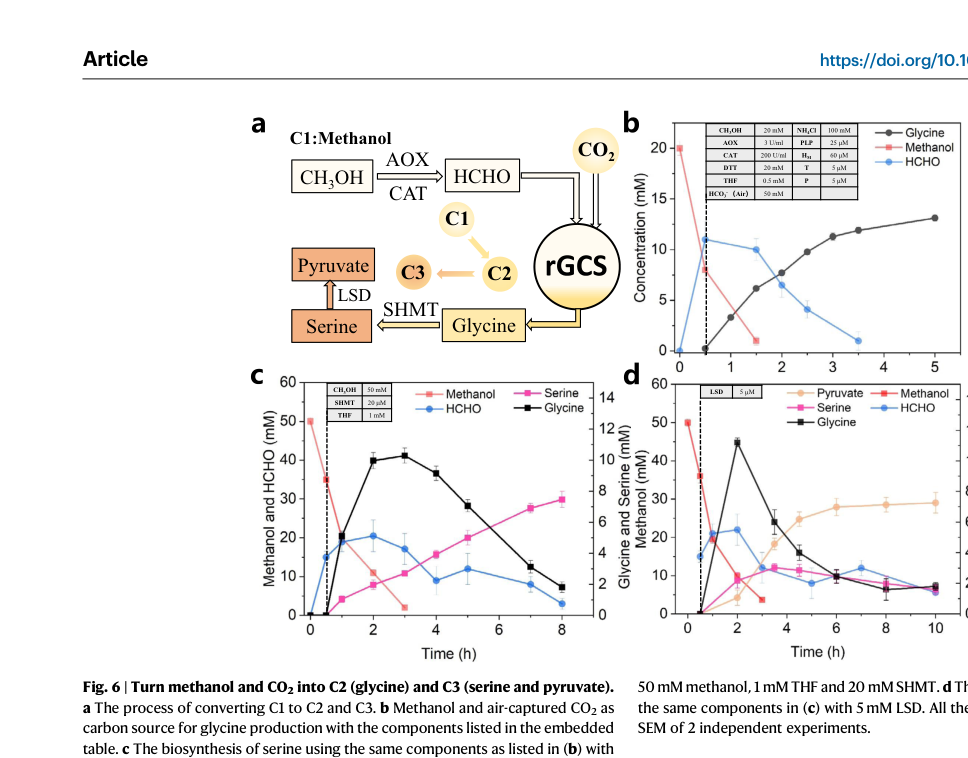

gcvP encodes glycine dehydrogenase (decarboxylating) (EC 1.4.4.2), also known as glycine cleavage system P protein, which catalyzes the first step of the glycine cleavage system. The P protein binds the alpha-amino group of glycine through its pyridoxal phosphate cofactor (at Lys-699), cleaves the C-C bond to release CO2, and transfers the remaining methylamine moiety to the lipoamide cofactor of the H protein (gcvH). This initiates the oxidative decarboxylation of glycine, which is then completed by the T and L proteins to produce 5,10-methylene-THF, CO2, and ammonia. The enzyme belongs to the GcvP family and functions as a component of the four-protein glycine cleavage complex (P, T, L, and H). In methylotrophs, the glycine cleavage system connects the serine cycle to the THF one-carbon pool: glycine (produced from serine by serA) is oxidatively cleaved by the GCV system, generating 5,10-methylene-THF that feeds into C1 metabolism. GcvP is a large protein (948 AA) with three characteristic domains: two N-terminal glycine cleavage system P-protein domains (residues 14-438 and 474-721) and a C-terminal domain (residues 766-887). The enzyme is essential for glycine catabolism and for recycling one-carbon units during methylotrophic growth.
| GO Term | Evidence | Action | Reason |
|---|---|---|---|
|
GO:0004375
glycine dehydrogenase (decarboxylating) activity
|
IEA
GO_REF:0000120 |
ACCEPT |
Summary: This is the primary and specific catalytic activity of GcvP - the oxidative decarboxylation of glycine. The P protein binds glycine through its pyridoxal phosphate cofactor, cleaves the C-C bond to release CO2, and transfers the methylamine moiety to the H protein. [file:METEA/gcvP/gcvP-uniprot.txt, "Glycine dehydrogenase (decarboxylating)"; "EC=1.4.4.2"; "N(6)-[(R)-lipoyl]-L-lysyl-[glycine-cleavage complex H protein] + glycine + H(+) = N(6)-[(R)-S(8)-aminomethyldihydrolipoyl]-L-lysyl-[glycine-cleavage complex H protein] + CO2"] Falcon deep research confirms this as the defining function of the GcvP family P-protein, conserved across bacteria, even though AM1-specific enzyme kinetics were not retrieved.
Reason: This EC 1.4.4.2 activity is directly supported by the UniProt catalytic activity statement and by mechanistic GcvP-family literature describing the first decarboxylation step of the glycine cleavage system. This is the core molecular function of the gene.
Supporting Evidence:
file:METEA/gcvP/gcvP-deep-research-falcon.md
GcvP catalyzes glycine decarboxylation
file:METEA/gcvP/gcvP-deep-research-falcon.md
commits glycine to cleavage and transfers the remaining aminomethyl fragment to the lipoyl arm of the H-protein
|
|
GO:0005829
cytosol
|
IEA
GO_REF:0000118 |
ACCEPT |
Summary: GcvP functions in the cytosol as part of the glycine cleavage complex. While cytosol is more specific than cytoplasm, the primary location annotation should be the glycine cleavage complex. [file:METEA/gcvP/gcvP-uniprot.txt, "The glycine cleavage system is composed of four proteins: P, T, L and H"] Falcon deep research notes that the GCS operates in the bacterial cytosol (in contrast to the mitochondrial localization in eukaryotes), supporting a cytosolic location for the AM1 enzyme by conserved inference.
Reason: Cytosolic localization is consistent with the bacterial glycine cleavage system, which operates as a soluble multi-protein complex in the cytosol rather than membrane-bound or secreted.
Supporting Evidence:
file:METEA/gcvP/gcvP-deep-research-falcon.md
in the cytosol of many bacteria
file:METEA/gcvP/gcvP-deep-research-falcon.md
operating as part of a multi-protein enzyme system rather than a membrane protein or secreted factor
|
|
GO:0005960
glycine cleavage complex
|
IEA
GO_REF:0000118 |
ACCEPT |
Summary: GcvP is a component of the glycine cleavage complex, working together with gcvT, gcvH, and gcvL to catalyze the oxidative cleavage of glycine. This is the primary cellular location for the enzyme. [file:METEA/gcvP/gcvP-uniprot.txt, "Glycine cleavage system P-protein"; "The glycine cleavage system is composed of four proteins: P, T, L and H"] Falcon deep research describes GcvP as the P-protein that acts within a multi-protein enzyme system together with the T, H, and L proteins.
Reason: GcvP is a defining subunit of the four-protein glycine cleavage complex (P, T, H, L); the complex is the structure within which its catalytic function is exercised.
Supporting Evidence:
file:METEA/gcvP/gcvP-deep-research-falcon.md
P-protein of the cytosolic glycine cleavage system
file:METEA/gcvP/gcvP-deep-research-falcon.md
operating as part of a multi-protein enzyme system rather than a membrane protein or secreted factor
|
|
GO:0006544
glycine metabolic process
|
IEA
GO_REF:0000002 |
KEEP AS NON CORE |
Summary: This is a general parent term for all glycine metabolism. While technically correct, the more specific term GO:0019464 (glycine decarboxylation via glycine cleavage system) provides better functional annotation.
Reason: Correct but too general; the specific child term GO:0019464 captures the actual process. Retained as non-core context. Falcon research confirms glycine as the substrate processed by GcvP.
Supporting Evidence:
file:METEA/gcvP/gcvP-deep-research-falcon.md
the supported specific substrate is glycine
|
|
GO:0006546
glycine catabolic process
|
IEA
GO_REF:0000002 |
KEEP AS NON CORE |
Summary: GcvP catalyzes the first step of glycine catabolism via the glycine cleavage system, initiating the oxidative decarboxylation of glycine. While correct, the more specific term GO:0019464 provides better functional annotation. Falcon research describes this as the initial glycine decarboxylation step that commits glycine to cleavage.
Reason: Correct but too general; the specific child term GO:0019464 better captures the glycine cleavage system process. Retained as non-core context.
Supporting Evidence:
file:METEA/gcvP/gcvP-deep-research-falcon.md
initial glycine decarboxylation
file:METEA/gcvP/gcvP-deep-research-falcon.md
commits glycine to cleavage and transfers the remaining aminomethyl fragment to the lipoyl arm of the H-protein
|
|
GO:0016491
oxidoreductase activity
|
IEA
GO_REF:0000043 |
KEEP AS NON CORE |
Summary: This is a very general parent term for all oxidoreductase enzymes. While technically correct (GcvP catalyzes an oxidative decarboxylation), the more specific term GO:0004375 (glycine dehydrogenase activity) provides much better functional annotation.
Reason: Correct but uninformatively general; the specific MF term GO:0004375 is the appropriate core annotation. Retained as non-core.
|
|
GO:0016594
glycine binding
|
IEA
GO_REF:0000118 |
ACCEPT |
Summary: GcvP binds glycine as its substrate through the pyridoxal phosphate cofactor. This is an essential substrate binding function that precedes the catalytic decarboxylation step. [file:METEA/gcvP/gcvP-uniprot.txt, "The P protein binds the alpha-amino group of glycine through its pyridoxal phosphate cofactor"] Falcon deep research confirms glycine is the documented P-protein substrate.
Reason: Glycine binding is an integral part of the P-protein catalytic cycle, with glycine documented as the specific substrate. Substrate binding is a meaningful molecular function annotation supporting the catalytic activity.
Supporting Evidence:
file:METEA/gcvP/gcvP-deep-research-falcon.md
the supported specific substrate is glycine
|
|
GO:0019464
glycine decarboxylation via glycine cleavage system
|
IEA
GO_REF:0000120 |
ACCEPT |
Summary: GcvP catalyzes the first step of glycine decarboxylation via the glycine cleavage system, initiating the oxidative cleavage of glycine by releasing CO2 and transferring the methylamine moiety to the H protein. This is the specific biological process that GcvP participates in. [file:METEA/gcvP/gcvP-uniprot.txt, "The glycine cleavage system catalyzes the degradation of glycine"] Falcon deep research identifies the P-protein of the cytosolic glycine cleavage system as the most evidence-supported functional placement for the AM1 enzyme, feeding the one-carbon (5,10-methylene-THF) pool.
Reason: This is the specific, informative biological process for GcvP and the appropriate core process annotation, preferred over the more general glycine metabolic/catabolic parent terms.
Supporting Evidence:
file:METEA/gcvP/gcvP-deep-research-falcon.md
P-protein of the cytosolic glycine cleavage system
file:METEA/gcvP/gcvP-deep-research-falcon.md
the most evidence-supported functional placement for AM1
|
|
GO:0030170
pyridoxal phosphate binding
|
IEA
GO_REF:0000118 |
ACCEPT |
Summary: GcvP requires pyridoxal phosphate (PLP) as a cofactor, which is covalently bound at Lys-699. The PLP cofactor is essential for binding the alpha-amino group of glycine and facilitating the decarboxylation reaction. [file:METEA/gcvP/gcvP-uniprot.txt, "COFACTOR: Name=pyridoxal 5'-phosphate"; "N6-(pyridoxal phosphate)lysine" at position 699; "The P protein binds the alpha-amino group of glycine through its pyridoxal phosphate cofactor"]
Reason: PLP is the essential prosthetic group of the P-protein and is required for glycine binding and decarboxylation; the covalent attachment at Lys-699 (UniProt) and PLP-dependence of the reaction are well supported.
Supporting Evidence:
file:METEA/gcvP/gcvP-deep-research-falcon.md
which can explain why externally omitting PLP does not necessarily abolish glycine cleavage
|
The research report should be a detailed narrative explaining the function, biological processes, and localization of the gene product. Citations should be given for all claims.
You should prioritize authoritative reviews and primary scientific literature when conducting research. You can supplement
this with annotations you find in gene/protein databases, but these can be outdated or inaccurate.
We are specifically interested in the primary function of the gene - for enzymes, what reaction is catalyzed, and what is the substrate specificity? For transporters, what is the substrate? For structural proteins or adapters, what is the broader structural role? For signaling molecules, what is the role in the pathway.
We are interested in where in or outside the cell the gene product carries out its function.
We are also interested in the signaling or biochemical pathways in which the gene functions. We are less interested in broad pleiotropic effects, except where these elucidate the precise role.
Include evidence where possible. We are interested in both experimental evidence as well as inference from structure, evolution, or bioinformatic analysis. Precise studies should be prioritized over high-throughput, where available.
Target identity: UniProt C5AUG0 is annotated as glycine dehydrogenase (decarboxylating), also called glycine cleavage system P-protein / glycine decarboxylase, EC 1.4.4.2, encoded by gcvP in Methylorubrum extorquens strain AM1. This identity matches the canonical bacterial glycine cleavage system (GCS) P-protein described in mechanistic literature (GcvP together with GcvT/GcvH/GcvL). (xu2021standalonelipoylatedhprotein pages 1-5)
Ambiguity control: The gene symbol gcvP is used broadly across bacteria; therefore, organism-specific claims are restricted to Methylorubrum extorquens where direct evidence was retrieved. When AM1-specific data were not found in the current corpus, functional statements are explicitly framed as conserved GcvP-family inference supported by mechanistic evidence. (xu2021standalonelipoylatedhprotein pages 1-5, xu2021standalonelipoylatedhprotein pages 5-8)
The glycine cleavage system (GCS) is a multi-enzyme complex comprising four proteins (P, T, H, L) that catalyzes the reversible decarboxylation and deamination of glycine, yielding CO2, NH3, and a one-carbon unit that is transferred to tetrahydrofolate (THF) to form N5,N10-methylene-THF (5,10-CH2-THF). The system is present in many bacteria (cytosol) and in eukaryotes typically in mitochondria; the chemical mechanism and division of labor among P/T/H/L are conserved. (xu2021standalonelipoylatedhprotein pages 1-5)
A stepwise scheme supported by in vitro reconstitution studies is:
1) P-protein (GcvP; EC 1.4.4.2) performs the first step, releasing CO2 from glycine and generating a methylamine-loaded lipoylated H-protein intermediate (Hint) from oxidized H-protein (Hox). (xu2021standalonelipoylatedhprotein pages 1-5)
2) T-protein (GcvT; EC 2.1.2.10) then catalyzes NH3 release and transfers the methylene group from Hint to THF, forming 5,10-CH2-THF, leaving reduced H-protein (Hred). (xu2021standalonelipoylatedhprotein pages 1-5)
3) L-protein (GcvL; EC 1.8.1.4) re-oxidizes Hred → Hox in the presence of NAD+, regenerating the carrier for another catalytic cycle. (xu2021standalonelipoylatedhprotein pages 1-5)
gcvP encodes the P-protein, commonly referred to as glycine decarboxylase or glycine dehydrogenase (decarboxylating). Its defining role is the initial glycine decarboxylation step that commits glycine to cleavage and transfers the remaining aminomethyl fragment to the lipoyl arm of the H-protein. (xu2021standalonelipoylatedhprotein pages 1-5)
Mechanistic reconstitution indicates the following cofactor logic:
P-protein (GcvP) is PLP-dependent; PLP can be covalently bound to P-protein, which can explain why externally omitting PLP does not necessarily abolish glycine cleavage if PLP is already bound to purified P-protein. (xu2021standalonelipoylatedhprotein pages 5-8)
H-protein (GcvH) carries a covalently attached lipoic acid on a conserved lysine (reported as Lys64 in the referenced H-protein). This lipoyl group is the “swinging arm” that accepts and transfers intermediates among proteins. (xu2021standalonelipoylatedhprotein pages 5-8)
T-protein (GcvT) requires THF as the C1 acceptor; THF absence had a strong negative effect on both cleavage and synthesis direction in vitro. (xu2021standalonelipoylatedhprotein pages 5-8)
L-protein (GcvL) is the redox-recycling enzyme for the lipoyl moiety of H-protein, coupling H-protein oxidation to NAD+/NADH; experimental assays also use FAD in place of L-protein in some in vitro contexts, consistent with L-protein flavin chemistry. (xu2021standalonelipoylatedhprotein pages 28-31)
Within the overall GCS cycle, GcvP catalyzes glycine decarboxylation (releasing CO2) and transfers the remaining aminomethyl fragment to the lipoylated H-protein (forming Hint from Hox). This reaction is explicitly described as the first step of the overall cycle. (xu2021standalonelipoylatedhprotein pages 1-5)
In a defined assay for the “glycine dcarboxylation reaction catalyzed by P-protein”, reaction mixtures included glycine, Hox (lipoylated H-protein in oxidized form), and PLP, consistent with PLP-dependence and the requirement for lipoylated carrier protein to accept the transferred intermediate. (xu2021standalonelipoylatedhprotein pages 28-31)
The retrieved mechanistic evidence directly documents glycine as the P-protein substrate and the formation of CO2 coupled to H-protein intermediate formation. Evidence in this corpus does not provide comparative kinetics across amino acids; thus, for AM1 C5AUG0, the supported specific substrate is glycine (the canonical GcvP substrate). (xu2021standalonelipoylatedhprotein pages 1-5, xu2021standalonelipoylatedhprotein pages 28-31)
In a reconstituted in vitro system, removing P-protein reduced glycine cleavage activity to ~10.34% of reference and glycine synthesis activity to ~34.07%, while removing both P-protein and PLP abolished both directions (0% activity). These experiments support GcvP as a major contributor to flux under the tested conditions and reinforce the centrality of PLP-associated chemistry in the P-protein step. (xu2021standalonelipoylatedhprotein pages 5-8)
The GCS produces 5,10-CH2-THF, which is a central node in cellular one-carbon metabolism; the methylene unit can be derived from glycine cleavage and is transferred to THF by GcvT. This establishes the conserved rationale for why gcvP is functionally connected to C1 unit supply and biosynthetic demand. (xu2021standalonelipoylatedhprotein pages 1-5)
A 2024 study in Methylorubrum extorquens PA1 examined glycine betaine (GB) metabolism and explicitly notes that GB metabolism generates formaldehyde, an intermediate of methylotrophic metabolism, motivating investigation in this genus. The same work emphasizes that GB degradation produces formaldehyde and glycine, which “may be used simultaneously by facultative methylotrophs,” connecting glycine production/consumption to methylotrophic physiology. (hying2024glycinebetainemetabolism pages 1-3)
Importantly, this paper states that “Methylorubrum extorquens AM1 can utilize GB as a sole source of carbon and energy; however, the pathway responsible has not been identified.” This provides direct organism-specific evidence that AM1 has metabolic capacity to route GB-derived carbon/energy, potentially involving glycine/serine/C1 intersections, but it does not experimentally implicate gcvP (C5AUG0) directly. (hying2024glycinebetainemetabolism pages 1-3)
Given the conserved chemistry (Sections 1–2) and the ecological/physiological relevance of glycine and folate-linked C1 metabolism in Methylorubrum environments (e.g., plant-associated habitats generating methylated compounds and formaldehyde), the most evidence-supported functional placement for AM1 gcvP (C5AUG0) is as the P-protein of the cytosolic glycine cleavage system, supplying CO2 + NH3 + 5,10-CH2-THF from glycine and participating in glycine/serine/C1 unit balancing. This is an inference grounded in conserved GCS mechanism rather than AM1-specific knockout/flux evidence in the retrieved corpus. (xu2021standalonelipoylatedhprotein pages 1-5, hying2024glycinebetainemetabolism pages 1-3)
The mechanistic GCS literature explicitly contrasts eukaryotic mitochondrial localization with bacterial cytosolic localization, describing GCS activity “in the cytosol of many bacteria”. Therefore, the most supported localization for M. extorquens AM1 GcvP is cytosolic (bacterial cytosol), operating as part of a multi-protein enzyme system rather than a membrane protein or secreted factor. However, no AM1-specific localization experiment (e.g., fractionation, microscopy tags) was retrieved in this evidence set. (xu2021standalonelipoylatedhprotein pages 1-5)
A 2023 Nature Communications study presented an ATP and NAD(P)H-free chemoenzymatic system (ICE-CAP) that uses a re-engineered glycine cleavage system (rGCS) as a core module for C1/C1 coupling (methanol-derived formaldehyde + CO2 equivalents) to produce amino acids and pyruvate. The authors explicitly define rGCS as the reversible GCS comprising T (aminomethyltransferase), P (glycine decarboxylase), L (dihydrolipoamide dehydrogenase), and H (aminomethyl carrier). (liu2023turnaircapturedco2 pages 1-2)
Key quantitative results (from air-captured CO2 experiments):
From methanol + air-captured CO2 (as bicarbonate): 13.2 mM glycine (1.0 g/L) in 5 h; reported yields 66% based on methanol and 26% based on CO2. (liu2023turnaircapturedco2 pages 7-8, liu2023turnaircapturedco2 media b8b87b3a)
With additional extension modules, final concentrations reached 7.5 mM serine (0.8 g/L) in 8 h and 6.9 mM pyruvate (0.6 g/L) in 5 h, with reported yields for serine 30% (methanol) and 15% (CO2). (liu2023turnaircapturedco2 pages 7-8, liu2023turnaircapturedco2 media b8b87b3a)
In a related integrated capture/use step described in the same work, 17.1 mM (1.3 g/L) glycine was achieved in 5.5 h with yield 86% based on formaldehyde and 34% based on CO2. (liu2023turnaircapturedco2 pages 7-8)
These results are not derived from M. extorquens AM1 proteins specifically, but they demonstrate the high current interest in GcvP-family enzymes as biocatalytic modules for C1-based manufacturing and highlight the importance of controlling the H-protein redox state and lipoyl arm accessibility for flux control. (liu2023turnaircapturedco2 pages 1-2, liu2023turnaircapturedco2 pages 7-8)
The 2024 Applied and Environmental Microbiology study provides a real-world ecological implementation context for Methylorubrum: on leaf surfaces (phyllosphere), methylated substrates such as glycine betaine can be encountered, producing formaldehyde and glycine. This directly links environmental methylated-compound utilization with pathways that can consume glycine and manage formaldehyde-derived C1 flux. (hying2024glycinebetainemetabolism pages 1-3)
Mechanistic analysis emphasizes that the GCS is central to C1 metabolism and that in modern C1 synthetic biology the reductive glycine pathway (rGP/rGlyP) uses the reversibility of the GCS as a core engine, with the reaction catalyzed by GCS described as a rate-limiting step for the pathway, motivating enzyme and system engineering. (xu2021standalonelipoylatedhprotein pages 1-5, xu2021standalonelipoylatedhprotein pages 5-8)
The 2023 ICE-CAP authors argue that chemical reduction of H-protein (replacing the NAD(P)H-dependent L-protein step in their engineered system) can increase thermodynamic driving force and “determine the reaction direction,” illustrating a modern expert view: GCS directionality and flux are tunable via redox and carrier-protein engineering. (liu2023turnaircapturedco2 pages 1-2)
In the in vitro reconstituted system, reported relative rate changes upon omission of components show:
These data support the view that while individual proteins contribute significantly, folate (THF) availability can be a dominant limiter under certain in vitro conditions—relevant for interpreting metabolic constraints in vivo. (xu2021standalonelipoylatedhprotein pages 5-8)
Figure evidence (glycine/serine/pyruvate from methanol + air-captured CO2) is shown in the cropped Figure 6 images. (liu2023turnaircapturedco2 media b8b87b3a, liu2023turnaircapturedco2 media c62a74bc)
Recommended primary function annotation (evidence-supported):
No AM1-specific gcvP perturbation or biochemical characterization (e.g., gene deletion phenotype, expression/regulation, or purified AM1 enzyme kinetics) was retrieved in this run; therefore AM1-specific conclusions are limited to conserved-function inference plus organism-level metabolic context. (hying2024glycinebetainemetabolism pages 1-3, xu2021standalonelipoylatedhprotein pages 1-5)
Substrate specificity beyond glycine and detailed AM1 structural features/domains were not extractable from the retrieved full-text set; the UniProt-provided domain architecture (GcvP family) remains the best source for those aspects, but it was not directly cited here because UniProt text was not retrieved via tools in this run.
| Component | Enzyme name (EC) | Reaction step / role | Key cofactors / prosthetic groups | Evidence type | Key quantitative data (if any) | Notes for Methylorubrum extorquens AM1 context | Primary sources (DOI URL, year) |
|---|---|---|---|---|---|---|---|
| GcvP | Glycine dehydrogenase (decarboxylating) / glycine decarboxylase P-protein (EC 1.4.4.2) | First step of glycine cleavage: decarboxylates glycine, releasing CO2 and generating aminomethylated/lipoylated H-protein intermediate (Hint) from oxidized H-protein (Hox) | PLP is required/associated with P-protein; acts with lipoylated H-protein as acceptor of the aminomethyl moiety | Mechanistic in vitro; pathway engineering | In reconstituted GCS, omission of P-protein reduced glycine-cleavage activity to 10.34% of reference and glycine-synthesis activity to 34.07%; omission of both P-protein and PLP abolished both directions; reference cleavage rate 22.48 ± 3.47 μM HCHO·min⁻¹ and synthesis rate 5.95 ± 0.13 μM glycine·min⁻¹ (xu2021standalonelipoylatedhprotein pages 5-8, xu2021standalonelipoylatedhprotein pages 24-28) | UniProt C5AUG0 in AM1 is annotated as this conserved family member. Direct AM1-specific biochemical characterization was not retrieved, so function is inferred from conserved bacterial GCS chemistry consistent with the annotation (xu2021standalonelipoylatedhprotein pages 1-5, xu2021standalonelipoylatedhprotein pages 5-8) | Xu et al., https://doi.org/10.1101/2021.03.28.437365, 2021 (xu2021standalonelipoylatedhprotein pages 1-5, xu2021standalonelipoylatedhprotein pages 5-8, xu2021standalonelipoylatedhprotein pages 24-28, xu2021standalonelipoylatedhprotein pages 28-31) |
| GcvT | Aminomethyltransferase / T-protein (EC 2.1.2.10) | Second step: releases NH3 and transfers the one-carbon unit from Hint to THF to form 5,10-methylene-THF, leaving reduced H-protein (Hred) | THF is the one-carbon acceptor; reaction depends on aminomethyl transfer to folate pool | Mechanistic in vitro; pathway engineering | Omission of T-protein reduced glycine-cleavage activity to 51.91% and glycine-synthesis activity to 76.53%; omission of THF reduced activities more severely to 3.88% and 8.94%, respectively (xu2021standalonelipoylatedhprotein pages 5-8, xu2021standalonelipoylatedhprotein pages 28-31) | In methylotrophic alphaproteobacteria such as Methylorubrum, this step is relevant because it feeds 5,10-CH2-THF into C1 metabolism; direct AM1 gcvT/gcvP operon-level evidence was not retrieved here (xu2021standalonelipoylatedhprotein pages 1-5) | Xu et al., https://doi.org/10.1101/2021.03.28.437365, 2021 (xu2021standalonelipoylatedhprotein pages 1-5, xu2021standalonelipoylatedhprotein pages 5-8, xu2021standalonelipoylatedhprotein pages 28-31) |
| GcvH | Glycine cleavage system H-protein / aminomethyl carrier H-protein (no EC assigned as carrier protein) | Lipoyl-armed carrier that shuttles reaction intermediates among P-, T-, and L-proteins; cycles through oxidized (Hox), aminomethylated (Hint), and reduced (Hred) states | Covalently attached lipoic acid on conserved Lys64; lipoyl arm is central prosthetic group | Mechanistic in vitro; pathway engineering | H-protein is essential in vitro; no reaction without Hox. Lipoylated H-protein alone could support glycine synthesis and, with FAD, glycine cleavage in vitro; full GCS kcat ~0.01 s⁻¹ versus H-protein-alone ~0.0057 s⁻¹ in the reported system (xu2021standalonelipoylatedhprotein pages 21-24, xu2021standalonelipoylatedhprotein pages 17-21) | Although not specific to AM1, the conserved requirement for lipoylated GcvH supports annotation of C5AUG0 as part of a canonical bacterial glycine cleavage system rather than an unrelated protein (xu2021standalonelipoylatedhprotein pages 5-8, xu2021standalonelipoylatedhprotein pages 24-28) | Xu et al., https://doi.org/10.1101/2021.03.28.437365, 2021 (xu2021standalonelipoylatedhprotein pages 21-24, xu2021standalonelipoylatedhprotein pages 17-21, xu2021standalonelipoylatedhprotein pages 5-8, xu2021standalonelipoylatedhprotein pages 24-28) |
| GcvL | Dihydrolipoyl dehydrogenase / L-protein (EC 1.8.1.4) | Third step: reoxidizes reduced H-protein (Hred) to Hox, coupling electron transfer to NAD+ reduction | FAD-associated flavin chemistry and NAD+/NADH redox pair | Mechanistic in vitro; pathway engineering | Omission of L-protein reduced glycine-cleavage activity to 37.55% and glycine-synthesis activity to 74.78%; in H-protein-only cleavage assays, 40 μM FAD enabled activity with 5 mM NAD+ (xu2021standalonelipoylatedhprotein pages 5-8, xu2021standalonelipoylatedhprotein pages 24-28, xu2021standalonelipoylatedhprotein pages 28-31) | For AM1, GcvL is expected to be the redox-recycling partner of GcvP/H/T in the cytosolic bacterial GCS; no direct AM1-specific localization experiment was found in retrieved evidence (xu2021standalonelipoylatedhprotein pages 1-5, xu2021standalonelipoylatedhprotein pages 24-28) | Xu et al., https://doi.org/10.1101/2021.03.28.437365, 2021 (xu2021standalonelipoylatedhprotein pages 1-5, xu2021standalonelipoylatedhprotein pages 5-8, xu2021standalonelipoylatedhprotein pages 24-28, xu2021standalonelipoylatedhprotein pages 28-31) |
| GcvP/GcvT/GcvH/GcvL system | Reversible glycine cleavage system (overall pathway module) | Overall reversible reaction: glycine ⇌ CO2 + NH3 + 5,10-CH2-THF-linked C1 transfer; in the reverse direction, forms glycine from NH4+, CO2, and 5,10-CH2-THF equivalents | PLP, lipoyl-H, THF, FAD/NAD(H) | Pathway engineering | In a 2023 chemoenzymatic rGCS platform using methanol + air-captured CO2, glycine reached 17.1 mM (1.3 g/L) in 5.5 h with 86% yield based on formaldehyde and 34% on CO2; from methanol + air-captured CO2, glycine reached 13.2 mM (1.0 g/L) in 5 h, serine 7.5 mM (0.8 g/L) in 8 h, and pyruvate 6.9 mM (0.6 g/L) in 5 h (liu2023turnaircapturedco2 pages 1-2, liu2023turnaircapturedco2 pages 7-8) | These engineering data are not from AM1, but they illustrate why GcvP-family enzymes are of current interest in C1 biomanufacturing and support the importance of the conserved reaction assigned to C5AUG0 (liu2023turnaircapturedco2 pages 1-2, liu2023turnaircapturedco2 pages 7-8) | Liu et al., https://doi.org/10.1038/s41467-023-38490-w, 2023 (liu2023turnaircapturedco2 pages 1-2, liu2023turnaircapturedco2 pages 7-8) |
| Glycine/C1 metabolism context | Intersection with glycine betaine catabolism and methylotrophy | In Methylorubrum extorquens physiology, glycine betaine degradation yields formaldehyde and glycine; formaldehyde enters methylotrophic metabolism and glycine can enter central metabolism via serine/pyruvate routes | THF-linked C1 metabolism and serine/glycine network implied; no direct cofactor assignment to AM1 GcvP in this physiology paper | Organism physiology | M. extorquens PA1 could not use glycine betaine as sole carbon source in wild type, whereas AM1 was reported as able to use glycine betaine as sole carbon and energy source; in PA1 experiments, growth assays used 8 mM glycine betaine (hying2024glycinebetainemetabolism pages 1-3) | This is the closest organism-specific evidence linking Methylorubrum glycine metabolism to C1 metabolism, but it does not directly characterize AM1 gcvP/C5AUG0; thus AM1 pathway assignment for gcvP remains inference-backed rather than directly tested here (hying2024glycinebetainemetabolism pages 1-3) | Hying et al., https://doi.org/10.1128/aem.02090-23, 2024 (hying2024glycinebetainemetabolism pages 1-3) |
Table: This table summarizes the conserved functional annotation of bacterial GcvP and its partner proteins in the glycine cleavage system, with emphasis on evidence relevant to UniProt C5AUG0 from Methylorubrum extorquens AM1. It distinguishes direct mechanistic evidence from broader pathway-engineering and organism-physiology context, which is important because AM1-specific experimental literature for C5AUG0 was limited.
References
(xu2021standalonelipoylatedhprotein pages 1-5): Yingying Xu, Yuchen Li, Han Zhang, Jinglei Nie, Jie Ren, Wei Wang, and An-Ping Zeng. Stand-alone lipoylated h-protein of the glycine cleavage system enables glycine cleavage and the synthesis of glycine from one-carbon compounds in vitro. bioRxiv, Mar 2021. URL: https://doi.org/10.1101/2021.03.28.437365, doi:10.1101/2021.03.28.437365. This article has 3 citations.
(xu2021standalonelipoylatedhprotein pages 5-8): Yingying Xu, Yuchen Li, Han Zhang, Jinglei Nie, Jie Ren, Wei Wang, and An-Ping Zeng. Stand-alone lipoylated h-protein of the glycine cleavage system enables glycine cleavage and the synthesis of glycine from one-carbon compounds in vitro. bioRxiv, Mar 2021. URL: https://doi.org/10.1101/2021.03.28.437365, doi:10.1101/2021.03.28.437365. This article has 3 citations.
(xu2021standalonelipoylatedhprotein pages 28-31): Yingying Xu, Yuchen Li, Han Zhang, Jinglei Nie, Jie Ren, Wei Wang, and An-Ping Zeng. Stand-alone lipoylated h-protein of the glycine cleavage system enables glycine cleavage and the synthesis of glycine from one-carbon compounds in vitro. bioRxiv, Mar 2021. URL: https://doi.org/10.1101/2021.03.28.437365, doi:10.1101/2021.03.28.437365. This article has 3 citations.
(hying2024glycinebetainemetabolism pages 1-3): Zachary T. Hying, Tyler J. Miller, Chin Yi Loh, and Jannell V. Bazurto. Glycine betaine metabolism is enabled in methylorubrum extorquens pa1 by alterations to dimethylglycine dehydrogenase. Applied and Environmental Microbiology, Jul 2024. URL: https://doi.org/10.1128/aem.02090-23, doi:10.1128/aem.02090-23. This article has 6 citations and is from a peer-reviewed journal.
(liu2023turnaircapturedco2 pages 1-2): Jianming Liu, Han Zhang, Yingying Xu, Hao Meng, and An-Ping Zeng. Turn air-captured co2 with methanol into amino acid and pyruvate in an atp/nad(p)h-free chemoenzymatic system. Nature Communications, May 2023. URL: https://doi.org/10.1038/s41467-023-38490-w, doi:10.1038/s41467-023-38490-w. This article has 67 citations and is from a highest quality peer-reviewed journal.
(liu2023turnaircapturedco2 pages 7-8): Jianming Liu, Han Zhang, Yingying Xu, Hao Meng, and An-Ping Zeng. Turn air-captured co2 with methanol into amino acid and pyruvate in an atp/nad(p)h-free chemoenzymatic system. Nature Communications, May 2023. URL: https://doi.org/10.1038/s41467-023-38490-w, doi:10.1038/s41467-023-38490-w. This article has 67 citations and is from a highest quality peer-reviewed journal.
(liu2023turnaircapturedco2 media b8b87b3a): Jianming Liu, Han Zhang, Yingying Xu, Hao Meng, and An-Ping Zeng. Turn air-captured co2 with methanol into amino acid and pyruvate in an atp/nad(p)h-free chemoenzymatic system. Nature Communications, May 2023. URL: https://doi.org/10.1038/s41467-023-38490-w, doi:10.1038/s41467-023-38490-w. This article has 67 citations and is from a highest quality peer-reviewed journal.
(liu2023turnaircapturedco2 media c62a74bc): Jianming Liu, Han Zhang, Yingying Xu, Hao Meng, and An-Ping Zeng. Turn air-captured co2 with methanol into amino acid and pyruvate in an atp/nad(p)h-free chemoenzymatic system. Nature Communications, May 2023. URL: https://doi.org/10.1038/s41467-023-38490-w, doi:10.1038/s41467-023-38490-w. This article has 67 citations and is from a highest quality peer-reviewed journal.
(xu2021standalonelipoylatedhprotein pages 24-28): Yingying Xu, Yuchen Li, Han Zhang, Jinglei Nie, Jie Ren, Wei Wang, and An-Ping Zeng. Stand-alone lipoylated h-protein of the glycine cleavage system enables glycine cleavage and the synthesis of glycine from one-carbon compounds in vitro. bioRxiv, Mar 2021. URL: https://doi.org/10.1101/2021.03.28.437365, doi:10.1101/2021.03.28.437365. This article has 3 citations.
(xu2021standalonelipoylatedhprotein pages 21-24): Yingying Xu, Yuchen Li, Han Zhang, Jinglei Nie, Jie Ren, Wei Wang, and An-Ping Zeng. Stand-alone lipoylated h-protein of the glycine cleavage system enables glycine cleavage and the synthesis of glycine from one-carbon compounds in vitro. bioRxiv, Mar 2021. URL: https://doi.org/10.1101/2021.03.28.437365, doi:10.1101/2021.03.28.437365. This article has 3 citations.
(xu2021standalonelipoylatedhprotein pages 17-21): Yingying Xu, Yuchen Li, Han Zhang, Jinglei Nie, Jie Ren, Wei Wang, and An-Ping Zeng. Stand-alone lipoylated h-protein of the glycine cleavage system enables glycine cleavage and the synthesis of glycine from one-carbon compounds in vitro. bioRxiv, Mar 2021. URL: https://doi.org/10.1101/2021.03.28.437365, doi:10.1101/2021.03.28.437365. This article has 3 citations.

---
id: C5AUG0
gene_symbol: gcvP
product_type: PROTEIN
taxon:
id: NCBITaxon:272630
label: Methylorubrum extorquens AM1
description: 'gcvP encodes glycine dehydrogenase (decarboxylating) (EC 1.4.4.2), also
known as glycine cleavage system P protein, which catalyzes the first step of the
glycine cleavage system. The P protein binds the alpha-amino group of glycine through
its pyridoxal phosphate cofactor (at Lys-699), cleaves the C-C bond to release CO2,
and transfers the remaining methylamine moiety to the lipoamide cofactor of the
H protein (gcvH). This initiates the oxidative decarboxylation of glycine, which
is then completed by the T and L proteins to produce 5,10-methylene-THF, CO2, and
ammonia. The enzyme belongs to the GcvP family and functions as a component of the
four-protein glycine cleavage complex (P, T, L, and H). In methylotrophs, the glycine
cleavage system connects the serine cycle to the THF one-carbon pool: glycine (produced
from serine by serA) is oxidatively cleaved by the GCV system, generating 5,10-methylene-THF
that feeds into C1 metabolism. GcvP is a large protein (948 AA) with three characteristic
domains: two N-terminal glycine cleavage system P-protein domains (residues 14-438
and 474-721) and a C-terminal domain (residues 766-887). The enzyme is essential
for glycine catabolism and for recycling one-carbon units during methylotrophic
growth.'
existing_annotations:
- term:
id: GO:0004375
label: glycine dehydrogenase (decarboxylating) activity
evidence_type: IEA
original_reference_id: GO_REF:0000120
review:
summary: This is the primary and specific catalytic activity of GcvP - the oxidative
decarboxylation of glycine. The P protein binds glycine through its pyridoxal
phosphate cofactor, cleaves the C-C bond to release CO2, and transfers the
methylamine moiety to the H protein. [file:METEA/gcvP/gcvP-uniprot.txt, "Glycine
dehydrogenase (decarboxylating)"; "EC=1.4.4.2"; "N(6)-[(R)-lipoyl]-L-lysyl-[glycine-cleavage
complex H protein] + glycine + H(+) = N(6)-[(R)-S(8)-aminomethyldihydrolipoyl]-L-lysyl-[glycine-cleavage
complex H protein] + CO2"] Falcon deep research confirms this as the defining
function of the GcvP family P-protein, conserved across bacteria, even though
AM1-specific enzyme kinetics were not retrieved.
action: ACCEPT
reason: This EC 1.4.4.2 activity is directly supported by the UniProt catalytic
activity statement and by mechanistic GcvP-family literature describing the
first decarboxylation step of the glycine cleavage system. This is the core
molecular function of the gene.
supported_by:
- reference_id: file:METEA/gcvP/gcvP-deep-research-falcon.md
supporting_text: GcvP catalyzes glycine decarboxylation
reference_section_type: OTHER
- reference_id: file:METEA/gcvP/gcvP-deep-research-falcon.md
supporting_text: commits glycine to cleavage and transfers the remaining
aminomethyl fragment to the lipoyl arm of the H-protein
reference_section_type: OTHER
- term:
id: GO:0005829
label: cytosol
evidence_type: IEA
original_reference_id: GO_REF:0000118
review:
summary: 'GcvP functions in the cytosol as part of the glycine cleavage complex.
While cytosol is more specific than cytoplasm, the primary location annotation
should be the glycine cleavage complex. [file:METEA/gcvP/gcvP-uniprot.txt,
"The glycine cleavage system is composed of four proteins: P, T, L and H"]
Falcon deep research notes that the GCS operates in the bacterial cytosol (in
contrast to the mitochondrial localization in eukaryotes), supporting a cytosolic
location for the AM1 enzyme by conserved inference.'
action: ACCEPT
reason: Cytosolic localization is consistent with the bacterial glycine cleavage
system, which operates as a soluble multi-protein complex in the cytosol rather
than membrane-bound or secreted.
supported_by:
- reference_id: file:METEA/gcvP/gcvP-deep-research-falcon.md
supporting_text: in the cytosol of many bacteria
reference_section_type: OTHER
- reference_id: file:METEA/gcvP/gcvP-deep-research-falcon.md
supporting_text: operating as part of a multi-protein enzyme system rather
than a membrane protein or secreted factor
reference_section_type: OTHER
- term:
id: GO:0005960
label: glycine cleavage complex
evidence_type: IEA
original_reference_id: GO_REF:0000118
review:
summary: 'GcvP is a component of the glycine cleavage complex, working together
with gcvT, gcvH, and gcvL to catalyze the oxidative cleavage of glycine. This
is the primary cellular location for the enzyme. [file:METEA/gcvP/gcvP-uniprot.txt,
"Glycine cleavage system P-protein"; "The glycine cleavage system is composed
of four proteins: P, T, L and H"] Falcon deep research describes GcvP as the
P-protein that acts within a multi-protein enzyme system together with the
T, H, and L proteins.'
action: ACCEPT
reason: GcvP is a defining subunit of the four-protein glycine cleavage complex
(P, T, H, L); the complex is the structure within which its catalytic function
is exercised.
supported_by:
- reference_id: file:METEA/gcvP/gcvP-deep-research-falcon.md
supporting_text: P-protein of the cytosolic glycine cleavage system
reference_section_type: OTHER
- reference_id: file:METEA/gcvP/gcvP-deep-research-falcon.md
supporting_text: operating as part of a multi-protein enzyme system rather
than a membrane protein or secreted factor
reference_section_type: OTHER
- term:
id: GO:0006544
label: glycine metabolic process
evidence_type: IEA
original_reference_id: GO_REF:0000002
review:
summary: This is a general parent term for all glycine metabolism. While technically
correct, the more specific term GO:0019464 (glycine decarboxylation via glycine
cleavage system) provides better functional annotation.
action: KEEP_AS_NON_CORE
reason: Correct but too general; the specific child term GO:0019464 captures
the actual process. Retained as non-core context. Falcon research confirms
glycine as the substrate processed by GcvP.
supported_by:
- reference_id: file:METEA/gcvP/gcvP-deep-research-falcon.md
supporting_text: the supported specific substrate is glycine
reference_section_type: OTHER
- term:
id: GO:0006546
label: glycine catabolic process
evidence_type: IEA
original_reference_id: GO_REF:0000002
review:
summary: GcvP catalyzes the first step of glycine catabolism via the glycine
cleavage system, initiating the oxidative decarboxylation of glycine. While
correct, the more specific term GO:0019464 provides better functional annotation.
Falcon research describes this as the initial glycine decarboxylation step
that commits glycine to cleavage.
action: KEEP_AS_NON_CORE
reason: Correct but too general; the specific child term GO:0019464 better captures
the glycine cleavage system process. Retained as non-core context.
supported_by:
- reference_id: file:METEA/gcvP/gcvP-deep-research-falcon.md
supporting_text: initial glycine decarboxylation
reference_section_type: OTHER
- reference_id: file:METEA/gcvP/gcvP-deep-research-falcon.md
supporting_text: commits glycine to cleavage and transfers the remaining
aminomethyl fragment to the lipoyl arm of the H-protein
reference_section_type: OTHER
- term:
id: GO:0016491
label: oxidoreductase activity
evidence_type: IEA
original_reference_id: GO_REF:0000043
review:
summary: This is a very general parent term for all oxidoreductase enzymes.
While technically correct (GcvP catalyzes an oxidative decarboxylation), the
more specific term GO:0004375 (glycine dehydrogenase activity) provides much
better functional annotation.
action: KEEP_AS_NON_CORE
reason: Correct but uninformatively general; the specific MF term GO:0004375
is the appropriate core annotation. Retained as non-core.
- term:
id: GO:0016594
label: glycine binding
evidence_type: IEA
original_reference_id: GO_REF:0000118
review:
summary: GcvP binds glycine as its substrate through the pyridoxal phosphate
cofactor. This is an essential substrate binding function that precedes the
catalytic decarboxylation step. [file:METEA/gcvP/gcvP-uniprot.txt, "The P
protein binds the alpha-amino group of glycine through its pyridoxal phosphate
cofactor"] Falcon deep research confirms glycine is the documented P-protein
substrate.
action: ACCEPT
reason: Glycine binding is an integral part of the P-protein catalytic cycle,
with glycine documented as the specific substrate. Substrate binding is a meaningful
molecular function annotation supporting the catalytic activity.
supported_by:
- reference_id: file:METEA/gcvP/gcvP-deep-research-falcon.md
supporting_text: the supported specific substrate is glycine
reference_section_type: OTHER
- term:
id: GO:0019464
label: glycine decarboxylation via glycine cleavage system
evidence_type: IEA
original_reference_id: GO_REF:0000120
review:
summary: GcvP catalyzes the first step of glycine decarboxylation via the glycine
cleavage system, initiating the oxidative cleavage of glycine by releasing
CO2 and transferring the methylamine moiety to the H protein. This is the
specific biological process that GcvP participates in. [file:METEA/gcvP/gcvP-uniprot.txt,
"The glycine cleavage system catalyzes the degradation of glycine"] Falcon
deep research identifies the P-protein of the cytosolic glycine cleavage system
as the most evidence-supported functional placement for the AM1 enzyme, feeding
the one-carbon (5,10-methylene-THF) pool.
action: ACCEPT
reason: This is the specific, informative biological process for GcvP and the
appropriate core process annotation, preferred over the more general glycine
metabolic/catabolic parent terms.
supported_by:
- reference_id: file:METEA/gcvP/gcvP-deep-research-falcon.md
supporting_text: P-protein of the cytosolic glycine cleavage system
reference_section_type: OTHER
- reference_id: file:METEA/gcvP/gcvP-deep-research-falcon.md
supporting_text: the most evidence-supported functional placement for AM1
reference_section_type: OTHER
- term:
id: GO:0030170
label: pyridoxal phosphate binding
evidence_type: IEA
original_reference_id: GO_REF:0000118
review:
summary: "GcvP requires pyridoxal phosphate (PLP) as a cofactor, which is covalently\
\ bound at Lys-699. The PLP cofactor is essential for binding the alpha-amino\
\ group of glycine and facilitating the decarboxylation reaction. [file:METEA/gcvP/gcvP-uniprot.txt,\
\ \"COFACTOR: Name=pyridoxal 5'-phosphate\"; \"N6-(pyridoxal phosphate)lysine\"\
\ at position 699; \"The P protein binds the alpha-amino group of glycine\
\ through its pyridoxal phosphate cofactor\"]"
action: ACCEPT
reason: PLP is the essential prosthetic group of the P-protein and is required
for glycine binding and decarboxylation; the covalent attachment at Lys-699
(UniProt) and PLP-dependence of the reaction are well supported.
supported_by:
- reference_id: file:METEA/gcvP/gcvP-deep-research-falcon.md
supporting_text: which can explain why externally omitting PLP does not necessarily
abolish glycine cleavage
reference_section_type: OTHER
core_functions:
- description: 'GcvP catalyzes the first and rate-limiting step of the glycine cleavage
system: the oxidative decarboxylation of glycine via a pyridoxal phosphate-dependent
mechanism. The P protein binds the alpha-amino group of glycine through its
PLP cofactor (covalently attached at Lys-699), cleaves the C-C bond to release
CO2, and transfers the resulting methylamine moiety to the lipoamide cofactor
of the H protein carrier. This initiates the four-step glycine cleavage process
that ultimately produces 5,10-methylene-THF, CO2, and ammonia. In methylotrophic
bacteria like M. extorquens AM1, the glycine cleavage system connects the serine
cycle to the THF one-carbon pool: glycine (produced from serine via serA) is
oxidatively cleaved by the GCV system, generating 5,10-methylene-THF for downstream
C1 metabolism. GcvP is a large, multi-domain protein (948 AA) that functions
as part of the four-protein complex (P, T, L, H) in the cytosol. The enzyme
is essential for glycine catabolism and for recycling one-carbon units during
growth on C1 compounds.'
molecular_function:
id: GO:0004375
label: glycine dehydrogenase (decarboxylating) activity
directly_involved_in:
- id: GO:0019464
label: glycine decarboxylation via glycine cleavage system
locations:
- id: GO:0005829
label: cytosol
supported_by:
- reference_id: file:METEA/gcvP/gcvP-uniprot.txt
supporting_text: The P protein binds the alpha-amino group of glycine through
its pyridoxal phosphate cofactor; CO2 is released and the remaining methylamine
moiety is then transferred to the lipoamide cofactor of the H protein. The
glycine cleavage system catalyzes the degradation of glycine.
- reference_id: file:METEA/gcvP/gcvP-deep-research-falcon.md
supporting_text: GcvP catalyzes glycine decarboxylation
reference_section_type: OTHER
- reference_id: file:METEA/gcvP/gcvP-deep-research-falcon.md
supporting_text: commits glycine to cleavage and transfers the remaining aminomethyl
fragment to the lipoyl arm of the H-protein
reference_section_type: OTHER
- reference_id: file:METEA/gcvP/gcvP-deep-research-falcon.md
supporting_text: P-protein of the cytosolic glycine cleavage system
reference_section_type: OTHER
in_complex:
id: GO:0005960
label: glycine cleavage complex
references:
- id: GO_REF:0000002
title: Gene Ontology annotation through association of InterPro records with GO
terms.
findings: []
- id: GO_REF:0000043
title: Gene Ontology annotation based on UniProtKB/Swiss-Prot keyword mapping
findings: []
- id: GO_REF:0000118
title: TreeGrafter-generated GO annotations
findings: []
- id: GO_REF:0000120
title: Combined Automated Annotation using Multiple IEA Methods.
findings: []
- id: file:METEA/gcvP/gcvP-uniprot.txt
title: UniProt record for gcvP (C5AUG0)
findings: []
- id: file:METEA/gcvP/gcvP-deep-research-falcon.md
title: Falcon deep research report for gcvP (C5AUG0) in Methylorubrum extorquens AM1
findings:
- supporting_text: GcvP catalyzes glycine decarboxylation
reference_section_type: OTHER
- supporting_text: commits glycine to cleavage and transfers the remaining aminomethyl
fragment to the lipoyl arm of the H-protein
reference_section_type: OTHER
- supporting_text: Its defining role is the
reference_section_type: OTHER
- supporting_text: initial glycine decarboxylation
reference_section_type: OTHER
- supporting_text: P-protein of the cytosolic glycine cleavage system
reference_section_type: OTHER
- supporting_text: the supported specific substrate is glycine
reference_section_type: OTHER
- supporting_text: in the cytosol of many bacteria
reference_section_type: OTHER
- supporting_text: operating as part of a multi-protein enzyme system rather
than a membrane protein or secreted factor
reference_section_type: OTHER
- supporting_text: The GCS produces
reference_section_type: OTHER
- supporting_text: which is a central node in cellular one-carbon metabolism
reference_section_type: OTHER
- supporting_text: which can explain why externally omitting PLP does not necessarily
abolish glycine cleavage
reference_section_type: OTHER
- supporting_text: the most evidence-supported functional placement for AM1
reference_section_type: OTHER
status: COMPLETE
{kind=link}